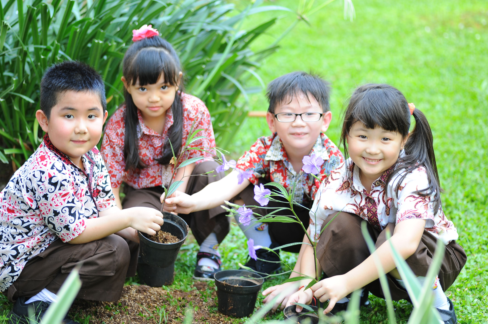

深夜十一點，客廳只剩檯燈亮著。你端著一杯熱牛奶走進孩子房間，看著他伏在案頭背著一道又一道題目，雙眼帶著疲憊。心裡那個盤旋很久的問題，又忍不住浮現：「孩子這麼辛苦，考上好學校之後，真的就會過得比較幸福嗎？」
許多父母的心情正是如此——我們看著新聞裡 AI 的進化速度，驚覺未來的世界早已徹底翻篇；但回過頭來，我們給孩子出謀劃策的，卻依然是二、三十年前我們走過的那條老路：補習、考高分、擠進名校、擠進熱門產業。
在社團法人 1221 未來教育發展協會的 podcast 節目《無邊界學習》中，主持人江宜汾特別邀請了長期走在教育改革最前線的振鐸學會理事長丁志仁（大家都親切地稱他「丁丁」），一起聊聊這個讓無數家長夜不能寐的焦慮。
舊地圖找不到新大陸：學歷不再是收入與幸福的唯一保證
「我們過去追求升學，是為了求得一口飯吃。但在今天的環境裡，學歷跟收入的關係早已越來越淡了。」丁丁直言，許多家長心目中「考上頂大＝人生順遂」的公式，其實早已失靈。
現實狀況是，如果我們還是只會逼著孩子擠進傳統的科技產業去「賣肝換錢」，孩子不僅可能錯過尋找天賦的機會，更容易在職場變化中失去安全感。反觀那些過去被大人認為「不夠體面」的專業技術工作，比如技術精湛的水電師傅，或是用心經營、極具口口相傳好口碑的家事清潔團隊，不僅訂單排到幾個月後，更有著無法被 AI 隨意取代的人情溫度與專業價值。
「別再拿昨天的地圖，幫孩子找今天的目的地了。」丁丁提醒父母，世界的產業結構正在解構重組，真正的安全感，來自於孩子是否具備真實解決問題的能力，而不是那張印著校名的大學畢業證書。

少子化帶來的溫柔轉機：當 70% 的國立高中隨手可及
這幾年少子化的衝擊讓不少學校陷入焦慮，但如果換個角度看，這其實是台灣教育幾十年來最溫柔的一次「翻轉契機」。
丁丁指出，隨著國中生人數驟降，孩子升上國立高中的機會率即將突破 70%。這意味著教育正在轉變為「買方市場」——孩子們不再需要把自己逼到極限，非得靠補習班殺出一條血路。像雙溪高中這樣推動優先免試的在地學校，將會成為越來越多家庭的優質選擇。
拼死拼活搶擠建國中學、北一女中或台清交的時代正在過去。當名校不再是唯一的窄門，孩子才能騰出寶貴的時間與心理空間，去探索真正的興趣，去嘗試那些課本以外的可能。
勇敢試錯的精神：實驗教育給孩子一雙飛翔的翅膀
台灣之所以能在東亞社會中率先打開這個思考框架，十年前通過的「實驗教育三法」功不可沒。

丁丁笑著分享，許多歐美先進國家因為心態保守，對於體制外辦學或在家自學設下了重重門檻；但台灣人有一種像海盜般「靈活、敢衝、動作快」的精神，率先踩下了教育革新的一步。像過去政府推動的「青年教育與就業儲蓄帳戶」，也是在傳遞同樣的心意：鼓勵十八歲的孩子不一定要立刻擠進大學，而是可以先走入社會體驗生活、摸索真實產業，等知道了自己要什麼，再回頭學習也不遲。
鬆開緊握的手，陪孩子走向多元包容的明天
面對充滿未知與 AI 衝擊的未來，身為父母，我們能給孩子最好的禮物，絕不是一份完美的成績單，而是「相信他能夠走出一條屬於自己的路」的勇氣。
當我們不再拿單一的標準去度量每一個獨一無二的孩子，孩子才能卸下沉重的枷鎖，露出積壓已久的笑容。就像《無邊界學習》一直以來想傳達的——教育不該是沉重的競技場，而是一場陪伴生命展翅翱翔的旅程。每一次轉念，都是我們給孩子最深刻的愛與祝福。